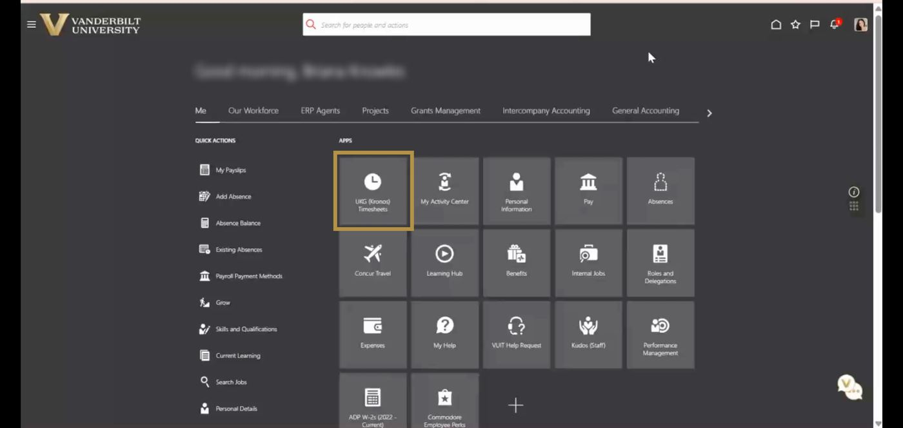
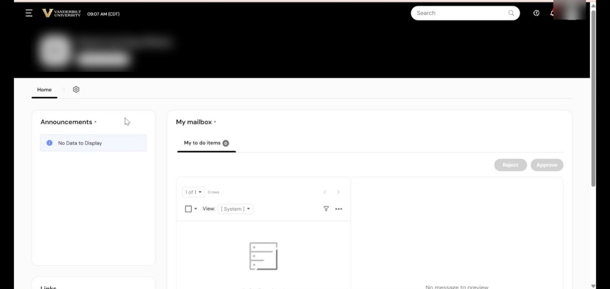
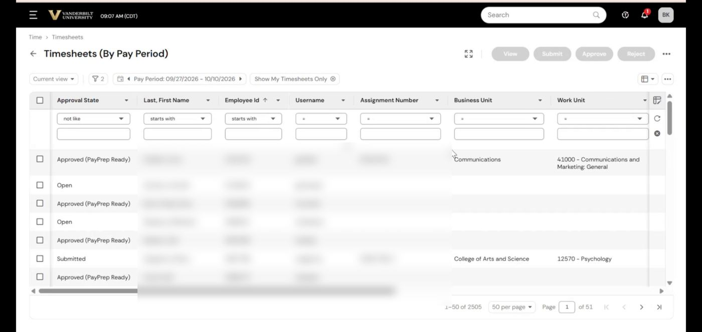
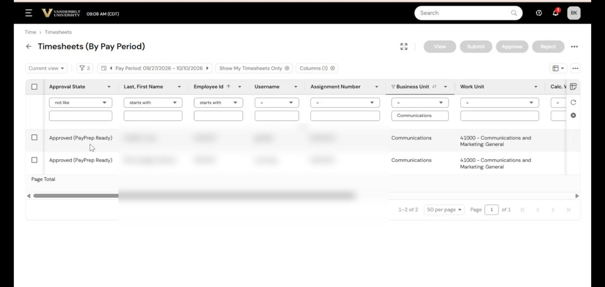
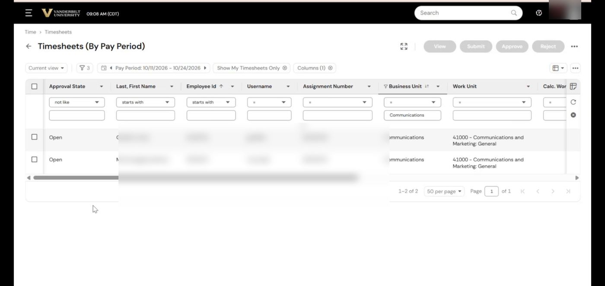
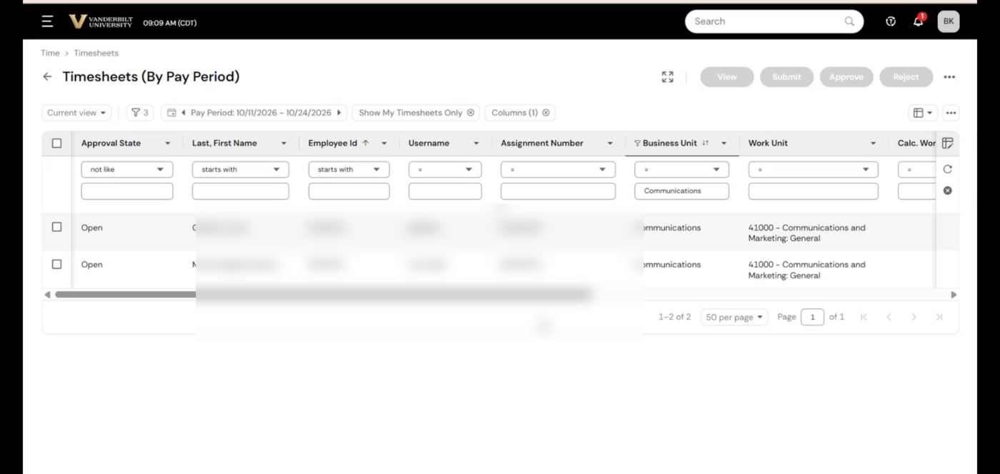
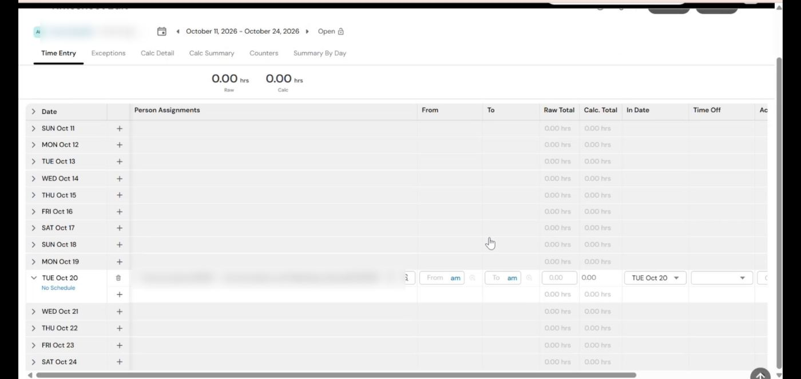
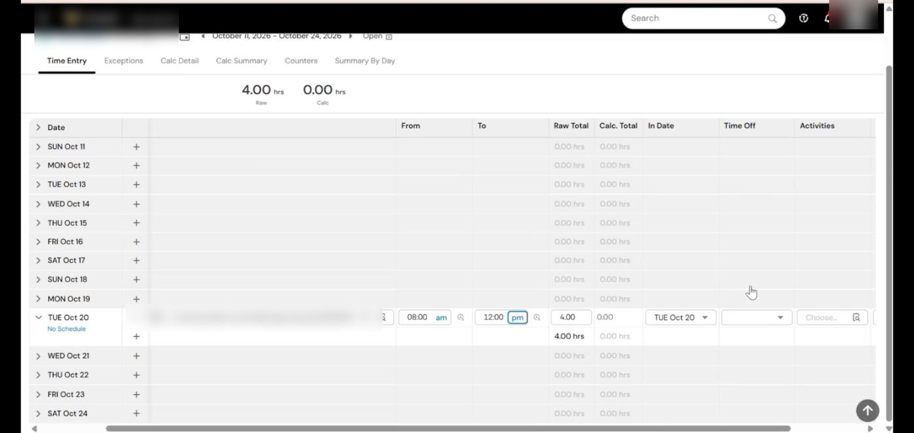

V.01 draftSteps 3 and 4 fill in once Jennifer Garcia's UKG walkthrough is recorded.
Screen checkConfirm in Vanderbilt's Oracle or UKG during a recorded demo: the pay code names in the Time Off list (PTO-Vacation and sick); who to contact when UKG access is missing.
1 · Intro
When to use it.
Watch first, then read the details below.
If you support weekly or biweekly employees, run this check every week so no one is paid late or wrong.
In UKG, employees and managers approve time cards, then payroll signs them off before payroll runs. Your check makes sure nothing is stuck before sign-off.
Use this whenEvery week, for your weekly and biweekly (non-exempt) employees.
2 · Walk through
Step by step.
Follow along in UKG. Check off each step as you go.
Watch-outs
Empty time cards early in an open period are normal.
In an open period, Save. Don't Submit.
Official documentation
Vendor documentation describes the standard process. Vanderbilt's setup, codes, and rules in this course take priority.
Use when: Every week, for your weekly and biweekly (non-exempt) employees. · System: UKG (Kronos)
Open UKG from Oracle.
Open the current pay period for your employees.
Filter: in the row under the column headings, type your business unit under Business Unit (or your work unit under Work Unit), then select Refresh.
Review each employee's punches.
Compare the punches to the employee's schedule.
Confirm every time card is complete and approved.
Missing or late time card: contact the manager.
An error you can't resolve: contact payroll.
Watch-outs
Empty time cards early in an open period are normal.
In an open period, Save. Don't Submit.
V.01 draft. Sources: Jennifer Garcia session, Oct 19; Briana Knowles walkthrough, Oct 20.Questions: pcb@vanderbilt.edu
HCM Academy detailed job aid · Payroll & Timecards
Managing time cards and PTO in UKG
Step by step with screenshots. Guidde walkthrough by Briana Knowles. Names, IDs, and usernames are blurred.
01Open UKG from Oracle.
On the Oracle Home page, on the Me tab, under Apps, select UKG (Kronos) Timesheets.

02Open the pay period list.
On the UKG Home page, scroll down to Links and select By Pay Period. Timesheets (By Pay Period) opens on the most recently completed pay period.

03Filter to your employees.
Use the filter row under the column headings. In this example, type the business unit under Business Unit, then select Refresh (the circular arrow at the right) to update the list.

04Choose the pay period.
Use the arrows to the left and right of Pay Period to move between periods. The date range shows the period you're reviewing.

05Approve or edit time cards.
Entering time is the employee's job. To act on a time card, check the box next to the employee's name, then choose Submit, Approve, or Reject at the top. To enter time for them (a system glitch, or a secondary time type such as PTO), open the time card, enter the time, and click Save. In an open pay period, don't Submit; you'd have to edit, update, and resubmit it later.

06Open the time card to enter PTO.
Select the employee's name to open their time card.

07Add a row on the day.
Find the day and click + to add a row. The new row shows the employee's assignment.

08Enter the hours.
Non-exempt PTO can be entered in 4-hour increments. Enter From and To, for example 8:00 am to 12:00 pm.
09Choose the PTO type.
Raw Total shows 4.00. In the Time Off column, click Browse and pick the pay code, for example PTO-Vacation.

10Save. Don't Submit.
Scroll up and click Save at the top right of Timesheet Edit. In an open pay period, leave it saved; don't Submit.